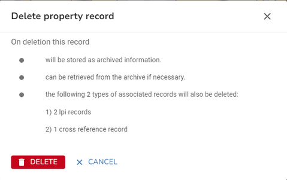

First you need to find the property that you wish to maintain. You can use the Search to search for the property by UPRN or address.
Once you have found the property, click on it, either in the search results or Explorer to open the Property form where the property details will be displayed.
Edit Property details
You can maintain the BLPU information on the Details tab of the Property form. There are a number of Actions available to help you to maintain your properties.
The actions for a BLPU are found when the Details tab is selected e.g.

Action |
Description |
Add an LPI to the property |
|
Add a child to the property |
|
Add a range of children to the property |
|
Zoom to this |
Zoom to the property on the map |
Open in Street View |
Display the property in Street View. The BLPU coordinates are passed to Google and Google displays the nearest street to those coordinates |
Copy UPRN |
Copies the UPRN to the clipboard |
Make child of... |
Allows you to make this property a child of another property. See Maintaining Parent / Child Relationships for details. |
Remove from parent |
If this is a child property then selecting this option will remove it from its parent. See Maintaining Parent / Child Relationships for details. |
Reject |
Change the status of the BLPU & LPIs to rejected and set the end date to today for all associated records |
Historicise |
Change the status of the BLPU & LPIs to historic and set the end date to today for all associated records |
For details on editing other property information please select one of the following links.
•Maintaining Application Cross References
When you are happy with your changes, click Save. Note: If there are any validation errors found when you click Save then these must be corrected before the property can be updated. Please see Property Error Handling for more information.
Reposition a Property
If you wish to reposition your property then use one of the select tools to select the exiting property centroid on the map and then use the mouse to drag it to a different location. When you are happy with your changes, click Save.
Delete a Property
First you need to search for the property you wish to delete and press enter to return the search results in the Explorer, don't pick the address from the drop down of search results.
•Now you can select Delete from the More Actions for the property in the Explorer.
•You will see a confirmation dialog letting you know what will be deleted if you continue e.g.

•Click  to delete the property and any associated records or click CANCEL to return without deleting.
to delete the property and any associated records or click CANCEL to return without deleting.
If you simply wish to make a property Historic or Rejected rather than actually deleting it, then these actions are also available under the More Actions in the Explorer and also from the Actions available on the Details tab of the Property form.